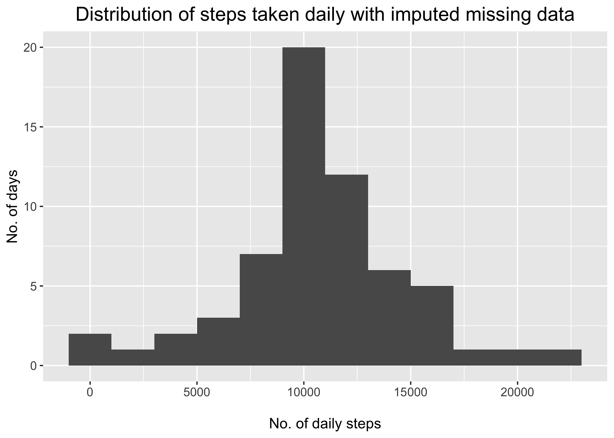

Reproducible Research: Peer Assessment 1
Setting up the environment
library(tidyverse)
library(ggplot2)
library(lubridate)
library(tufte)
# Reduce precision (we're working with actual steps, after all) and disable
# scientific notation (for now)
options(digits=1)
# Big penalty to bias against switch to scientific notation
options(scipen=999)
# Default options for code chunks
knitr::opts_chunk$set(cache = TRUE,
warning = FALSE,
message = FALSE,
dpi = 300,
echo = TRUE)
#######################################
# Convenience functions
#######################################
# Convert interval code to time
id_to_time <- function(id) {
id %>%
as.character() %>%
str_pad(width = 4,
side = 'left',
pad = "0") %>%
readr::parse_time(format = '%H%M')
}
# Plot theme
my_theme <- function(x) {
theme(
strip.text = element_text(size = 12, hjust = 0.5, face = "bold"),
plot.title = element_text(hjust = 0.5, size = 18),
plot.subtitle = element_text(hjust = 0.5, face = "italic"),
axis.title = element_text(size = 14),
axis.text = element_text(size = 12),
panel.spacing.x = unit(1, "cm")
)
}Loading and preprocessing the data
odata <- read_csv('data/activity.csv')Histogram of the total number of steps for each day
daily <- odata %>%
group_by(date) %>%
summarize(total = sum(steps))
# Plot:
daily %>%
ggplot(aes(x = total)) +
geom_histogram(binwidth = 2000) +
labs(x = "\nNo. of daily steps",
y = "No. of days",
title = "Distribution of daily steps") +
my_theme()
Mean and median number of steps per day:
# Mean/median values
day_mean <- mean(daily$total, na.rm = TRUE) %>% round()
day_median <- median(daily$total, na.rm = TRUE) %>% round()Mean steps taken per day: 10766
Median steps taken per day: 10765
What is the average daily activity pattern?
interval_means <- odata %>%
group_by(interval) %>%
summarize(mean = mean(steps, na.rm = TRUE)) %>%
ungroup() %>%
na.omit()
# Take the row with highest mean (interval with highest mean steps)
interval_max <- interval_means %>%
slice_max(mean, n=1) %>%
# Round the values.
round()
interval_means %>%
ggplot(aes(x = interval, y = mean)) +
geom_line() +
labs(x = "\nTime interval",
y = "Mean steps taken per 5-min interval\n",
title = "Mean steps taken per time interval") +
my_theme()
# Convert interval code to time
interval_time <- id_to_time(interval_max$interval)The above plot shows the number of steps taken, on average, during each 5-minute interval. During the study period, interval #835 was the one during which the most steps were taken–on average, 206. Interval #835 corresponds to 08:35:00.
Imputing missing values
Missing data points: 2304.
We will impute missing data with the mean value from the same intervals in remaining days. This is under the assumption that there are typical<- times of the day (e.g., 12 am through 6 am) where an individual is likely to be at rest. We use data.table which affords a good combination of execution speed and readability. Column imputed in the new dataframe (impdata) stores non-missing and imputed values.
Coding environment
Using data.table operations mostly as an exercise, but it should also be the fastest option.
# Loading for fast operation when imputing
library(data.table)
# For readability, create a "lambda" function which will go into the
# data.table statement
impute.mean <- function(var) replace(var, is.na(var), mean(var, na.rm = TRUE))
# Create data.table
impdata <-setDT(odata)
impdata[,
imputed := impute.mean(steps),
by = interval]
# On a copy of the data, group by day and sum daily steps
histdata <- impdata[,
.(total = sum(imputed)),
by = date]
# Plot histo
histdata %>%
ggplot(aes(x = total)) +
geom_histogram(binwidth = 2000) +
labs(x = "\nNo. of daily steps",
y = "No. of days",
title = "Distribution of steps taken daily with imputed missing data"
) +
my_theme()
Are there differences in activity patterns between weekdays and weekends?
To answer this question, we will use imputed data and convert the dates to a “day-of-the-week” integer (i.e., Monday = 1, Tuesday = 2, etc…). We’ll then plot the mean steps taken per 5-minute interval during weekdays and weekends.
# Get day-of-the-week and mark each row as "Weekdays" or "Weekends" (factor)
weekdata <- setDT(copy(impdata))
weekdata[, `:=`(day = as.integer(strftime(date, '%u')))]
weekdata[, `:=`(type = ifelse(day > 5, "Weekends", "Weekdays"))]
weekdata[, type := as.factor(type)]
# Time formatting function
time_label <- function(x) {strftime(x, '%H:%M')}
# Compute mean values for each 5 min-interval
weekdata[, `:=`(mean_steps = mean(imputed, na.rm = TRUE),
time = id_to_time(interval)),
by = .(interval, type)]
# Select columns we're interested in
cols = c('date', 'time', 'mean_steps')
# Aggregate for plotting
weekdata[, .SD[1L], by = .(interval, type), .SDcols = cols] %>%
ggplot(aes(x = time, y = mean_steps)) +
geom_line() +
facet_wrap(vars(type), labeller = label_value) +
labs(x = "\nTime of day",
y = "Steps taken",
title = "Comparison of mean steps taken per interval,\n by weekday",
subtitle = "Interval IDs converted to time") +
scale_x_time(labels = time_label,
breaks = scales::breaks_width('3 hours'),
expand = expansion()) +
my_theme() +
theme(axis.text.x = element_text(size = 8))